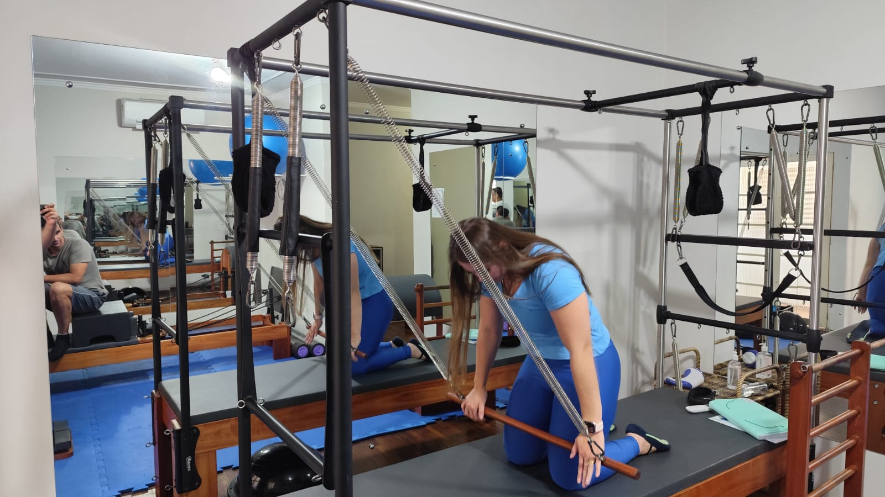

A ventosoterapia, também conhecida como terapia com ventosas, é uma técnica antiga utilizada para promover a cura e o bem-estar físico. Aqui estão alguns dos principais benefícios das ventosas:
Alívio da Dor: As ventosas podem ajudar a aliviar dores musculares e articulares, promovendo a circulação sanguínea e reduzindo a inflamação.
Desintoxicação do Corpo: Ao melhorar a circulação sanguínea, a ventosoterapia ajuda a eliminar toxinas acumuladas no corpo, promovendo uma sensação de bem-estar geral.
Redução do Estresse: A técnica pode ajudar a relaxar o corpo e a mente, reduzindo os níveis de estresse e promovendo o relaxamento profundo.
Melhora da Circulação: As ventosas aumentam o fluxo sanguíneo na área tratada, o que pode acelerar a recuperação muscular e melhorar a saúde geral.
Tratamento de Problemas Respiratórios: A ventosoterapia pode ser utilizada para aliviar sintomas de resfriados e outros problemas respiratórios, melhorando a respiração.
Fortalecimento do Sistema Imunológico: A terapia pode ajudar a fortalecer o sistema imunológico, tornando o corpo mais resistente a doenças.
Melhora da Pele: As ventosas podem promover a saúde da pele, ajudando a reduzir celulites e melhorando a aparência geral da pele.
Alívio de Problemas Digestivos: A ventosoterapia pode ser eficaz no tratamento de problemas digestivos, ajudando a melhorar a função gastrointestinal.
Esses benefícios fazem da ventosoterapia uma prática valiosa para quem busca melhorar a saúde e o bem-estar de maneira natural e eficaz.

Descrição detalhada da imagem de Ventosoterapia